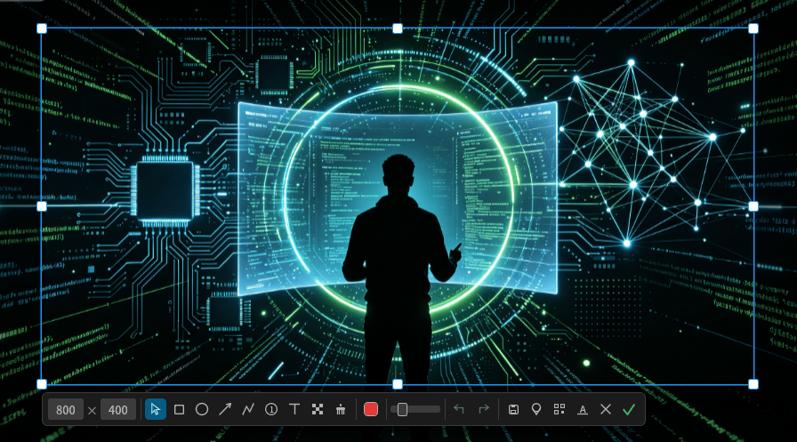

Rust 编写的跨平台截图工具 —— 截图、标注、取色、二维码、OCR、GIF 录屏、贴图， 一个命令全搞定。
最新版本 v0.2.0
对齐 Snipaste 级体验，但更轻、更快、开源免费。
拖拽框选带像素放大镜，矩形、椭圆、箭头、画笔、标号、文本、马赛克、橡皮擦。已画元素随时可改，全量撤销重做。
把选区钉在屏幕上对照参考（Ctrl+P）。可多个并存，拖拽移动、滚轮缩放、双击复制，互不干扰。
框选即识别，一键复制。Windows / macOS 走系统引擎（支持中文零依赖），Linux 用 tesseract，另有内置纯 Rust 引擎兜底。
选区内的二维码直接解出内容，纯 Rust 解码，无需打开手机扫一扫。
选区录制 GIF（gifski 编码，质量拔群），命令行一句话开录，Ctrl+C 收尾。
13×13 像素网格放大镜 + 十字线，RGB / HEX / CMYK 三种格式快捷键直接复制。
每个功能都有无界面模式，绑定快捷键、写进脚本、塞进 CI 都行。
$ lscreen # 托盘常驻，F1 随时截图 $ lscreen pick # 屏幕取色，单击复制 HEX $ lscreen shot --region 0,0,1920,1080 -o shot.png # 定点截屏 $ lscreen shot --clipboard # 全屏进剪贴板 $ lscreen ocr -i doc.png --lang chi_sim --lang eng # 图片文字识别 $ lscreen qr -i photo.png # 图片二维码识别 $ lscreen record --fps 10 --quality 90 -o demo.gif # 录屏参数可调 $ lscreen pin -i mockup.png # 任意图片贴屏幕上
全平台原生包，Linux 覆盖 x64 / arm64 / armv7 / x86 四种架构。
| 平台 | 包格式 | 安装方式 |
|---|---|---|
| Debian / Ubuntu / Deepin | .deb | sudo apt install ./lscreen_*.deb |
| Fedora / RHEL / openSUSE | .rpm | sudo rpm -i lscreen-*.rpm |
| 任意 Linux 发行版 | .AppImage / .tar.gz | 下载即用，免安装 |
| Windows | -setup.exe / .zip | 安装器免管理员权限，zip 解压即用 |
| macOS | .dmg | 拖入 Applications（首次右键 → 打开） |
也可源码安装：cargo install --path crates/app · 全部产物见 Releases